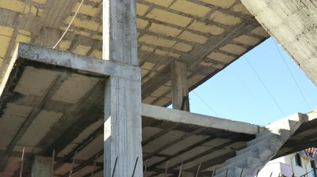
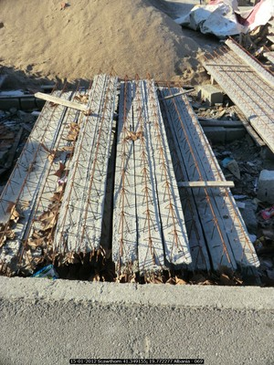
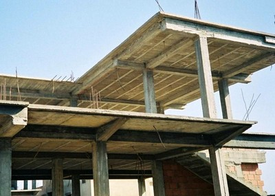
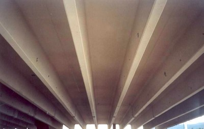
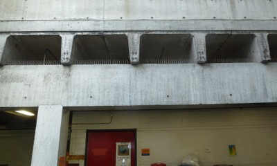
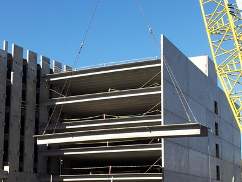
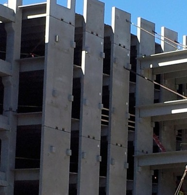

Pisos de concreto prefabricado con cubierta de concreto reforzado [FC3]
Unidades de concreto prefabricado con cubierta de concreto reforzado. Unidades prefabricadas incluyen forjados alveolares, forjados sólidos, sistemas de viguetas de concreto prefabricado con rellenos de madera o mampostería y unidades con sección de doble T.

Sistema de piso en concreto (Viguetas de Macedonia) encontradas en Albania. Bloques de aislamiento de Poliestireno entre viguetas de concreto. Una estructura de concreto fue construida con viguetas de concreto ubicadas entre vigas de soporte de concreto. Entre las viguetas suspendidas los bloques de aislamiento se colocan en el encofrado, distanciados de tal manera para crear un vacio conteniendo cada vigueta. Un forjado de recubrimiento se vierte, el cual llena los vacíos envolviendo las viguetas en concreto . (C. Scawthorn)

Viguetas de Macedonia listas para la construcción del piso, Albania (C. Scawthorn)

Sistema de piso que consiste en unidades de mampostería de concreto y viguetas de concreto reforzado forjado in situ, Algeria (S. Brzev)

Sistema de piso que consiste de unidades de mampostería de concreto y viguetas de concreto reforzado fundido in situ. (conocido como el sistema "Tralix"), Chile (S. Brzev)

Sistema de construcción "Tralix", Chile (M. Astroza)

Sistema de piso compuesto por unidades de mampostería de concreto y viguetas de concreto reforzado fundido in situo, Haiti (A. Lang)


Sistemas de piso de concreto prefabricado (Unidades de sección doble T) son típicamente fabricados con una brida de 50 mm y cubiertos en campo con concreto fundido in situ. (Canada, S. Brzev)


Elemento típico de sección doble T (izquierda) y soporte en el extremo (derecha) (S. Brzev)

Viga de sección doble T elevada mediante grúa en el sitio de construcción, Nepal (K. Porter)

Ménsulas de la pared listas para soportar elementos de sección Doble T, Nepal (K. Porter)